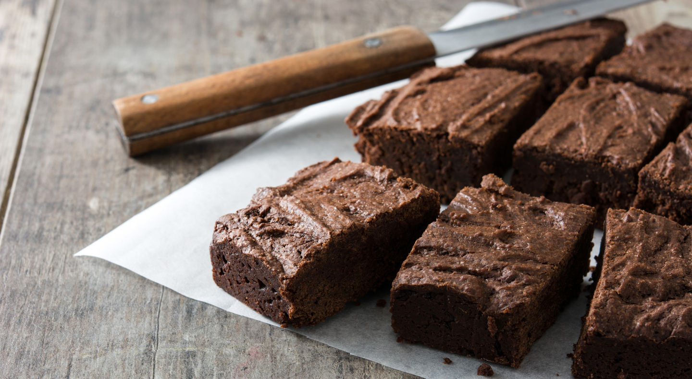

Como fazer bolo de chocolate sem farinha
Receita simples e prática para garantir o seu lanche da tarde
Por: Redação ● 16/04/2020 ● Tempo de leitura: 2 mins
Ingredientes
- 6 ovos;
- 8 colheres (sopa) de cacau em pó 50%;
- 100g de manteiga derretida;
- 1 pitada de sal;
- 2 colheres de sopa de mel;
- 1 pacote de coco ralado seco ou 100g;
- 1 colher (sopa) cheia de fermento em pó.
Mode de preparo
Coloque em uma tigela os ovos, açúcar, cacau, sal e a manteiga e misture bem. Adicione o coco ralado aos poucos, mexendo sempre até virar uma massa única. Por último, adicione o fermento. Transfira a massa para uma forma untada com manteiga e cacau e leve ao forno pré aquecido a 200° por 30 minutos. Retire do forno e espere esfriar para desenformar. Pronto, agora você tem uma bolo de chocolate sem farinha para fazer a sua felicidade na hora que der aquela vontade de comer um bolo ou mudar um pouco o seu lanche.